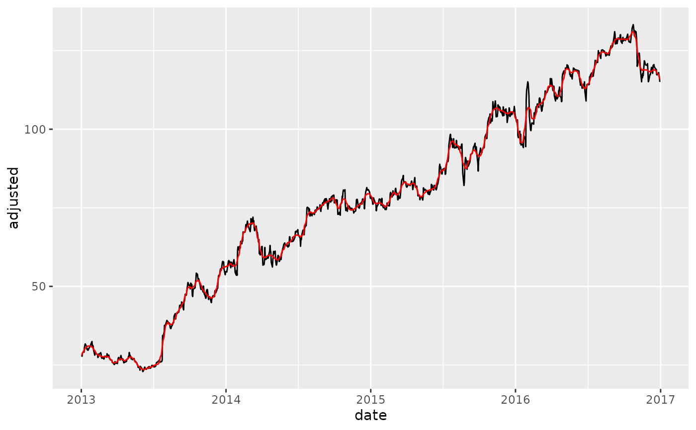
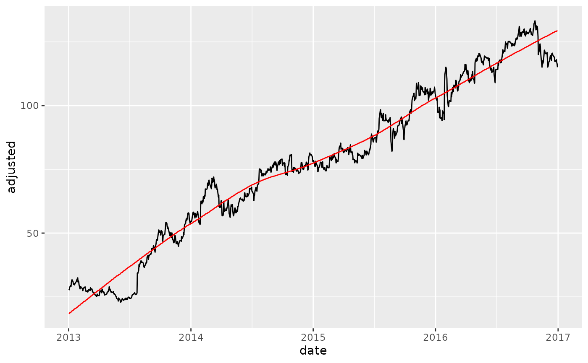

smooth_vec() applies a LOESS transformation to a numeric vector.
smooth_vec(x, period = 30, span = NULL, degree = 2)
Arguments
| x | A numeric vector to have a smoothing transformation applied. |
|---|---|
| period | The number of periods to include in the local smoothing.
Similar to window size for a moving average.
See details for an explanation |
| span | The span is a percentage of data to be included
in the smoothing window. Period is preferred for shorter windows
to fix the window size.
See details for an explanation |
| degree | The degree of the polynomials to be used. Accetable values (least to most flexible): 0, 1, 2. Set to 2 by default for 2nd order polynomial (most flexible). |
Value
A numeric vector
Details
Benefits:
When using
period, the effect is similar to a moving average without creating missing values.When using
span, the effect is to detect the trend in a series using a percentage of the total number of observations.
Loess Smoother Algorithm
This function is a simplified wrapper for the stats::loess()
with a modification to set a fixed period rather than a percentage of
data points via a span.
Why Period vs Span?
The period is fixed whereas the span changes as the number of observations change.
When to use Period?
The effect of using a period is similar to a Moving Average where the Window Size
is the Fixed Period. This helps when you are trying to smooth local trends.
If you want a 30-day moving average, specify period = 30.
When to use Span?
Span is easier to specify when you want a Long-Term Trendline where the
window size is unknown. You can specify span = 0.75 to locally regress
using a window of 75% of the data.
See also
Loess Modeling Functions:
step_smooth()- Recipe fortidymodelsworkflow
Additional Vector Functions:
Box Cox Transformation:
box_cox_vec()Lag Transformation:
lag_vec()Differencing Transformation:
diff_vec()Rolling Window Transformation:
slidify_vec()Loess Smoothing Transformation:
smooth_vec()Fourier Series:
fourier_vec()Missing Value Imputation for Time Series:
ts_impute_vec()
Examples
library(tidyverse) library(tidyquant) library(timetk) # Training Data FB_tbl <- FANG %>% filter(symbol == "FB") %>% select(symbol, date, adjusted) # ---- PERIOD ---- FB_tbl %>% mutate(adjusted_30 = smooth_vec(adjusted, period = 30, degree = 2)) %>% ggplot(aes(date, adjusted)) + geom_line() + geom_line(aes(y = adjusted_30), color = "red")# ---- SPAN ---- FB_tbl %>% mutate(adjusted_30 = smooth_vec(adjusted, span = 0.75, degree = 2)) %>% ggplot(aes(date, adjusted)) + geom_line() + geom_line(aes(y = adjusted_30), color = "red")# ---- Loess vs Moving Average ---- # - Loess: Using `degree = 0` to make less flexible. Comperable to a moving average. FB_tbl %>% mutate( adjusted_loess_30 = smooth_vec(adjusted, period = 30, degree = 0), adjusted_ma_30 = slidify_vec(adjusted, .period = 30, .f = AVERAGE, .partial = TRUE) ) %>% ggplot(aes(date, adjusted)) + geom_line() + geom_line(aes(y = adjusted_loess_30), color = "red") + geom_line(aes(y = adjusted_ma_30), color = "blue") + labs(title = "Loess vs Moving Average")